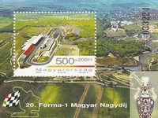
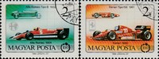
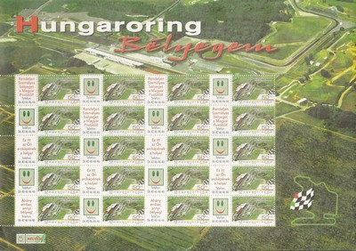
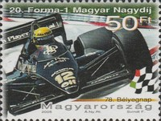

Hungary
 |
 Issue date: 17th June 2005 Stamps issued to recognise the Hungarian Grand Prix; the 2005 race was held on 31/07/05 and saw the beginning of the end of tobacco advertising due to the Europe-wide ban. McLaren (West) and BAR (Lucky Strike) ran with tobacco livery on Friday and Saturday before withdrawing it for the race, while Ferrari (Marlboro) and Renault (Mild Seven) ran full tobacco livery for the entire weekend. McLaren announced that Scotch whisky producer Johnnie Walker would take over the team's title sponsorship for the remainder of the year. Kimi Raikkonen (Mclaren) won the race, ahead of Michael Schumacher (Ferrari) who was able to withstand the late charge from Ralf Schumacher (Toyota), who scored his first podium finish of the year, and his first for Toyota.  Issue date: 30th July 2010 A stamp issued to commemorate the 25th anniversary of the Hungarian Grand Prix. The first Hungarian Grand Prix was held on 21st June 1936 over a 3.1-mile track laid out in Nepliget, a park in Budapest. The Mercedes-Benz, Auto Union, and Ferrari teams all sent three cars and the event drew a very large crowd. However, politics and the ensuing war meant the end of Grand Prix motor racing in the country for fifty years. A major coup by Bernie Ecclestone, the 1986 Hungarian Grand Prix was the first Formula One race to take place behind the Iron Curtain. Held at the twisty Hungaroring in Mogyorod near Budapest, the race has been a mainstay of the racing calendar. Run in the heat of a central European summer, it also held the distinction of being the only current Grand Prix venue that had never seen a wet race up until the 2006 Hungarian Grand Prix. The 1986 race was won by Nelson Piquet (Williams-Honda), Ayrton Senna (Lotus-Renault) was second and Nigel Mansell (Williams-Honda) was third. Nelson Piquet's overtake of Ayrton Senna is considered one of the most beautiful ever in racing history. The 2010 race was won by Mark Weber (Red Bull-Renault), Fernando Alonso (Ferrari) was second and Sebastian Vettel (Red Bull-Renault) was third.  Issue date: 2006 A single stamp issued to commemorate the 20th anniversary of the Hungarian grand prix. The 2006 race was the first ever wet Hungarian grand prix. Jenson Button (Honda) won the race despite beginning in 14th place, with Pedro de la Rosa (McLaren) scoring his first podium with second place, and Nick Heidfeld getting BMW Sauber's first ever podium with 3rd. Debutant driver Robert Kubica (BMW Sauber) finished in seventh place and scored two points, but was later disqualified as his car was underweight due to excessive tire wear. This coincidentally meant that Michael Schumacher (Ferrari) earned a point despite not finishing, as he was elevated to 8th place in the final results. This was Jenson Button's first victory of his career and the first race win for a British driver since David Coulthard won the Australian Grand Prix three years previously, and the first by an Englishman since Johnny Herbert won the 1999 European Grand Prix nearly seven years previously, in similarly changeable weather circumstances.  Issue date: 1986 A set of stamps which feature the following F1 cars: - Alfa Romeo 184T - Ferrari 156 - Ferrari 156/85  Issue date: 2005 A souvenir sheet featuring the Hungaroring. The Hungaroring is where is the Hungarian Grand prix is held. In 1986, it became the location of the first F1 Grand prix to be held behind the Iron Curtain. A Grand Prix has been held there ever since.  Issue date: 2006 The 1906 Grand Prix de l'Automobile Club de France, commonly known as the 1906 French Grand Prix, was a motor race held on 26 and 27 June 1906, on closed public roads outside the city of Le Mans. The Grand Prix was organised by the Automobile Club de France (ACF) at the prompting of the French automobile industry as an alternative to the Gordon Bennett races (as France had the largest automobile industry in Europe at the time). This first Grand Prix was won by Ferenc Szisz driving a Renault.  Issue date: 17th June 2005 Stamps issued to recognise the Hungarian Grand Prix; the 2005 race was held on 31/07/05 and saw the beginning of the end of tobacco advertising due to the Europe-wide ban. McLaren (West) and BAR (Lucky Strike) ran with tobacco livery on Friday and Saturday before withdrawing it for the race, while Ferrari (Marlboro) and Renault (Mild Seven) ran full tobacco livery for the entire weekend. McLaren announced that Scotch whisky producer Johnnie Walker would take over the team's title sponsorship for the remainder of the year. Kimi Raikkonen (Mclaren) won the race, ahead of Michael Schumacher (Ferrari) who was able to withstand the late charge from Ralf Schumacher (Toyota), who scored his first podium finish of the year, and his first for Toyota.  Issue date: 17th June 2005 Stamps issued to recognise the Hungarian Grand Prix; the 2005 race was held on 31/07/05 and saw the beginning of the end of tobacco advertising due to the Europe-wide ban. McLaren (West) and BAR (Lucky Strike) ran with tobacco livery on Friday and Saturday before withdrawing it for the race, while Ferrari (Marlboro) and Renault (Mild Seven) ran full tobacco livery for the entire weekend. McLaren announced that Scotch whisky producer Johnnie Walker would take over the team's title sponsorship for the remainder of the year. Kimi Raikkonen (Mclaren) won the race, ahead of Michael Schumacher (Ferrari) who was able to withstand the late charge from Ralf Schumacher (Toyota), who scored his first podium finish of the year, and his first for Toyota. |